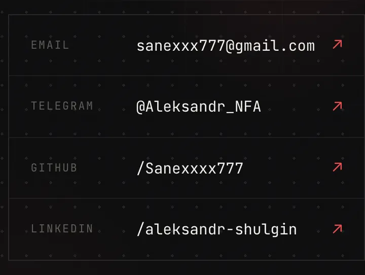
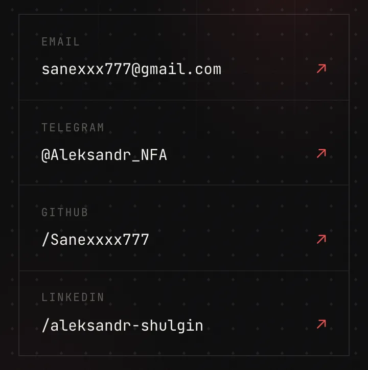

The defect
no scanner reports
This is a sample report for the "finish what the AI started" service. Rather than exposing a client's code, the audit was run against my own site - and found a real bug in it. Here it is in full: how it surfaced, what proves it, what was fixed, and how the fix was verified in production.
Scope of the check
- Target
- Public portfolio site, React + Vite, static hosting
- Date
- 29 July 2026
- Checked
- Mobile layout, page weight and load time, security headers, console errors
- Found
- 1 medium-severity defect, fixed and verified in production
- Time spent
- About an hour from first request to a confirmed fix
The finding
On screens up to 380 px wide - common Android models - the contact block
was wider than the page: the document stretched to 370 px against a
360 px screen. The right border of the cards and the edge of the section
heading fell outside the visible area.
Why it went unnoticed
The defect hid behind body { overflow-x: hidden }. That line disables
horizontal scrolling - the page does not drift sideways, so everything looks fine.
The extra pixels are simply never shown. The symptom is not that something moved;
it is that part of the content silently fails to render.
It cannot be reproduced on an iPhone (390 px and wider) - everything fits there. Checking "I opened it on my phone, looks fine" cannot catch this class of defect at all.
What automated checks say
Nothing. HTML and CSS are valid, zero console errors, no failed requests, Lighthouse is happy. Linters and scanners stay quiet because the code is syntactically correct - only the behaviour at a specific screen width is wrong.


Root cause
The classic flexbox trap: items inside a row default to min-width: auto and
refuse to shrink below their content. The label on the left was pinned at
5.5rem while the long email on the right could not compress - together they
stopped fitting the container.
The fix
Five lines of CSS: on narrow screens the row wraps, the label takes its own line above the value, and the value is allowed to shrink.
@media (max-width: 520px) {
.row { flex-wrap: wrap; row-gap: 0.35rem; }
.rowLbl { min-width: 0; flex: 0 0 100%; }
.rowVal { min-width: 0; overflow-wrap: anywhere; }
}Verification
The measurement was repeated at four widths on the live site after deployment. The criterion: document width never exceeds screen width, and no text sits beyond the edge.
320 px → 320 / 320 · clipped text: 0 · OK
360 px → 360 / 360 · clipped text: 0 · OK
390 px → 390 / 390 · clipped text: 0 · OK
414 px → 414 / 414 · clipped text: 0 · OK"It builds without errors" is not proof. Proof is that the defect stopped reproducing where it used to reproduce.
Checked and clean
The report also covers what turned out to be fine - otherwise there is no way to tell what was actually examined.
What the service covers
The scope is deliberately tight - otherwise an audit turns into endless reading of someone else's code.
- One site or one repository
- 2-3 days turnaround
- A report in exactly this shape: findings ranked by impact on users and revenue
- For each finding - how to reproduce it, what proves it, what to do
- Small fixes done on the spot, like this one; larger rewrites quoted separately
I work from the code and the public URL. Access to your production server, database or keys is neither required nor requested.
An honest caveat: an audit does not guarantee the absence of other defects. It shows what was found within the agreed scope and time - with proof, not a list of linter warnings.
Run it on your project
A project from Cursor, Lovable, Bolt - or hand-assembled with an AI. I will look at it the same way and show you what is actually going on inside.
Discuss an audit →The service on the storefront: Vibe Code Rescue - audit + fixes.